阅读词表
| 词条 | 拼音 | 类型 | 说明 |
|---|---|---|---|
| 爻辞 | yáo cí | concept | 解释每一爻吉凶和意义的文字。 |
| 乾 | qián | text | 八卦和六十四卦卦名。 |
| 易经 | yì jīng | text | 文王卦爻辞体系，书中用以讨论翦商谋略。 |
| 坤 | kūn | text | 八卦和六十四卦卦名。 |
| 六十四卦 | liù shí sì guà | concept | 由上下两个八卦重叠形成的六十四种六爻卦象。 |
| 卦象 | guà xiàng | concept | 由阴阳爻组成的卦形图象。 |
| 八卦 | bā guà | concept | 由三爻组成的八种基本卦象。 |
| 卦爻辞 | guà yáo cí | concept | 《易经》中卦辞和爻辞的合称。 |
| 同人 | tóng rén | text | 《易经》卦名，文中解释为集结盟军。 |
| 翦商 | jiǎn shāng | concept | 周人剪灭商朝的政治行动。 |
| 离 | lí | text | 八卦之一。 |
| 卦辞 | guà cí | concept | 解释一卦吉凶和意义的文字。 |
| 坎 | kǎn | text | 八卦之一。 |
| 周昌 | zhōu chāng | person | 周文王姬昌，书中常称周昌。 |
| 高亨 | gāo hēng | person | 现代《周易》研究学者。 |
| 周文王 | zhōu wén wáng | person | 周族领袖姬昌。 |
| 震 | zhèn | text | 八卦之一。 |
| 艮 | gèn | text | 八卦之一。 |
| 孔颖达 | kǒng yǐng dá | person | 唐代经学家，《周易正义》编纂者之一。 |
| 牝马 | pìn mǎ | rare_word | 母马；见《易经》坤卦卦辞。 |
| 阳爻 | yáng yáo | concept | 八卦、六十四卦中的阳性爻。 |
| 羑里 | yǒu lǐ | place | 文王被商纣囚禁之地。 |
| 阴爻 | yīn yáo | concept | 八卦、六十四卦中的阴性爻。 |
| 顾颉刚 | gù jié gāng | person | 现代史学家，曾研究《周易》爻辞中的故事。 |
| 巽 | xùn | text | 八卦之一。 |
| 兑 | duì | text | 八卦之一。 |
| 无妄 | wú wàng | text | 《易经》卦名，文中用于说明卦象成对原则。 |
| 大畜 | dà xù | text | 《易经》卦名，文中与无妄成对举例。 |
| 屯 | tún | text | 《易经》卦名，震下坎上。 |
| 蒙 | méng | text | 《易经》卦名，坎下艮上。 |
| 戡 | kān | rare_word | 用武力平定；文中“戡商”即翦灭商朝。 |
| 杞 | qǐ | rare_word | 木名；此处见垢卦“以杞包瓜”。 |
| 颐 | yí | text | 《易经》卦名，文中列为自身对称的卦。 |
| 大过 | dà guò | text | 《易经》卦名，文中列为自身对称的卦。 |
| 中孚 | zhōng fú | text | 《易经》卦名，文中列为自身对称的卦。 |
| 小过 | xiǎo guò | text | 《易经》卦名，文中列为自身对称的卦。 |
| 筮 | shì | rare_word | 用蓍草或草棍占算。 |
| 蹇 | jiǎn | text | 《易经》卦名，文中以数字卦举例。 |
| 缊 | yùn | rare_word | 包藏；文中见《周易正义》引文“缊在爻卦之中矣”。 |
| 贞人 | zhēn rén | concept | 甲骨占卜中主持或记录占问的人。 |
| 亢龙有悔 | kàng lóng yǒu huǐ | 项目词典 | 《易》语，处于极盛而不知退会有悔恨。 |
| 甲骨刻辞 | jiǎ gǔ kè cí | 项目词典 | 刻在甲骨上的文字记录。 |
| 甲骨卜辞 | jiǎ gǔ bǔ cí | 项目词典 | 商代刻写在甲骨上的占卜文字。 | 刻写在龟甲兽骨上的占卜文字。 | 刻写在甲骨上的占卜记录。 | 刻写在龟甲兽骨上的占卜辞句。 |
| 周武王 | zhōu wǔ wáng | 项目词典 | 周发，灭商之君。 |
| 上帝 | shàng dì | 项目词典 | 商周宗教中的最高神。 |
| 人牲 | rén shēng | 项目词典 | 被用于祭祀的人。 | 被用于祭祀或献祭的人。 | 被杀用于祭祀的人。 |
| 人祭 | rén jì | 项目词典 | 杀人用于祭祀的宗教行为。 | 以人作为祭品的祭祀行为。 | 杀人用于祭祀。 |
| 卜辞 | bǔ cí | 项目词典 | 甲骨占卜后刻写或记录的辞句。 | 甲骨上记录占卜的文字。 | 占卜时刻写或记录的辞句。 |
| 占辞 | zhān cí | 项目词典 | 占卜时刻写或记录的辞句。 |
| 可贞 | kě zhēn | 项目词典 | 可通过占卜预测或问卜。 |
| 号咷 | háo táo | 项目词典 | 大声哭号。 |
| 含章 | hán zhāng | 项目词典 | 《易经》坤卦爻辞，文中据高亨释为“翦商”。 |
| 周公 | zhōu gōng | 项目词典 | 周公旦，武王之弟。 | 周公旦，周初政治家。 |
| 周原 | zhōu yuán | 项目词典 | 关中地区周族的重要活动中心。 | 关中地区周族重要遗址和活动中心。 | 周族核心区域。 |
| 周易 | zhōu yì | 项目词典 | 以《易经》及其传文构成的古代经典。 | 《易经》与后世《易传》合称的经典。 |
| 商族 | shāng zú | 项目词典 | 商王朝建立前后的族群共同体。 |
| 商王 | shāng wáng | 项目词典 | 商朝王。 |
| 喋血 | dié xuè | 项目词典 | 形容杀伤很多、血流遍地。 |
| 图腾 | tú téng | 项目词典 | 族群崇拜并作为象征的动物、植物或自然物。 |
| 妇好 | fù hǎo | 项目词典 | 商王武丁配偶，甲骨文中著名女性军事人物。 |
| 孔子 | kǒng zǐ | 项目词典 | 春秋时期思想家、教育家，儒家学派的重要奠基者。 |
| 左传 | zuǒ zhuàn | 项目词典 | 春秋史传文献。 |
| 易传 | yì zhuàn | 项目词典 | 解释《易经》的传文总称。 |
| 春秋 | chūn qiū | 项目词典 | 孔子时代相关的编年史经典。 |
| 武王 | wǔ wáng | 项目词典 | 周武王。 |
| 殷商 | yīn shāng | 项目词典 | 商朝后期文化和政权。 | 商代后期以殷墟为中心的商王朝阶段。 |
| 殷墟 | yīn xū | 项目词典 | 晚商都邑遗址，甲骨卜辞的重要出土地。 | 商代晚期都城遗址。 |
| 殷都 | yīn dū | 项目词典 | 商朝后期都城区域，今安阳殷墟一带。 | 商朝后期都城区域。 | 晚商都城，通常指安阳殷墟。 |
| 献祭 | xiàn jì | 项目词典 | 把祭品奉献给神灵或祖先。 | 向神灵、祖先等奉献祭品。 |
| 神权 | shén quán | 项目词典 | 以神灵、祭祀权威支撑的统治权力。 | 以神灵或宗教权威支配社会政治生活的权力形态。 |
| 箕子 | jī zǐ | 项目词典 | 商末贵族，后世文献中重要人物。 | 商末贵族，明夷卦解释中的关键人物。 |
| 羌人 | qiāng rén | 项目词典 | 西方族群，常见于商代卜辞。 |
青铜器词表
| 器名 | 拼音 | 类型 | 说明 |
|---|---|---|---|
| 暂无青铜器词表 | |||
疑难古文字与 OCR 校读表
| 来源 | 当前文字 | 问题 | 处理 |
|---|---|---|---|
| 八卦/六十四卦卦象图示 | 乾☰ 坤☷；坎☵ 离☲；震☳ 艮☶；巽☴ 兑☱；屯☵/☳；蒙☶/☵；同人☰/☲；乾☰/☰ 坤☷/☷；无妄☰/☳ 大畜☶/☰ | OCR 曾将卦象线图误识为普通文字、拉丁字母或异常符号，如“乾三坤三”“卦象是H”“卦象是鬓”“■Hmm”等。 | 已按周易卦象系统将可确认的八卦/六十四卦示例改为可渲染的 Unicode trigram 符号；六十四卦以“上卦/下卦”形式表示。若原 PDF 使用专门图片，仍建议人工抽查符号版式。 |
| 数字卦甲骨刻辞示例 | 六七八九六八 | 用户据原文校正，原 OCR 误作“六七，I九六”。 | 已按用户校正改入正文；如需进一步核对数字卦释读，可再据原 PDF 或专业释文复查。 |
章节导读札记
| 主题 | 札记 | 操作 |
|---|---|---|
| 暂无章节导读札记 | ||
用户札记
| 类型 | 页 | 内容 |
|---|---|---|
| 暂无用户札记 | ||
原书阅读器页 389原书物理 PDF 页 387印刷页 375
第二十章翦商与《易经》的世界观
《易经》记载的猎俘和人祭完全超出了后人的想象，那么，周昌为什么记录这些？难道他就是想要写一本日记或者回忆录？
卦爻辞纷繁杂乱的现象背后，其实是周昌对世界运行规律的探索，通过卦象排列组合的变化，他发现，现有的世界秩序不是永恒的，而是可以改变的。尤为重要的是，商朝的统治也是如此。
在讲述这些之前，我们先要讲一讲《易经》最基本的原理：阴阳、卦象、卦辞和爻辞。
易卦占算传承自商人
上古时代，人们曾发明一种用草或竹子的小棍来算数的方法：把它们在地上摆放成不同的形状，用以代表不同的数字，然后进行计算，有点类似后世的算盘。用来计数的竹棍，叫“策”或“筹”，比如，流传下来的古语中就有“运筹”和“策划”等。
当积累了一定的算数知识，古人发现，数字虽然有很多，但都可以被分为奇数和偶数两大类。这恰好和日常生活里的“阴” “阳”观念搭配：太阳晒到的地方是阳，晒不到的就是阴；奇数是阳，偶数是阴。然后，有天地、山水、男女、雌雄、上下……几乎所有的事物，都可以分为阴性和阳性。
这是早期人类发展出的一种简单归纳思维，甚至直到现代，有些语言的名词还会分成阴阳两性，比如法语和俄语。而初步的算命理论就是将用草棍运算出的数字归纳成阴或者阳，以代表世间不同的事物，乃至命运的吉凶。
用甲骨预测，称为“卜”；用草棍预测，则称为“筮”。“筮”上面的“竹”字头代表占算用的草（竹）棍，下面的“巫”字表示只有沟通鬼神的巫师才有占算能力。[[fn:1]]
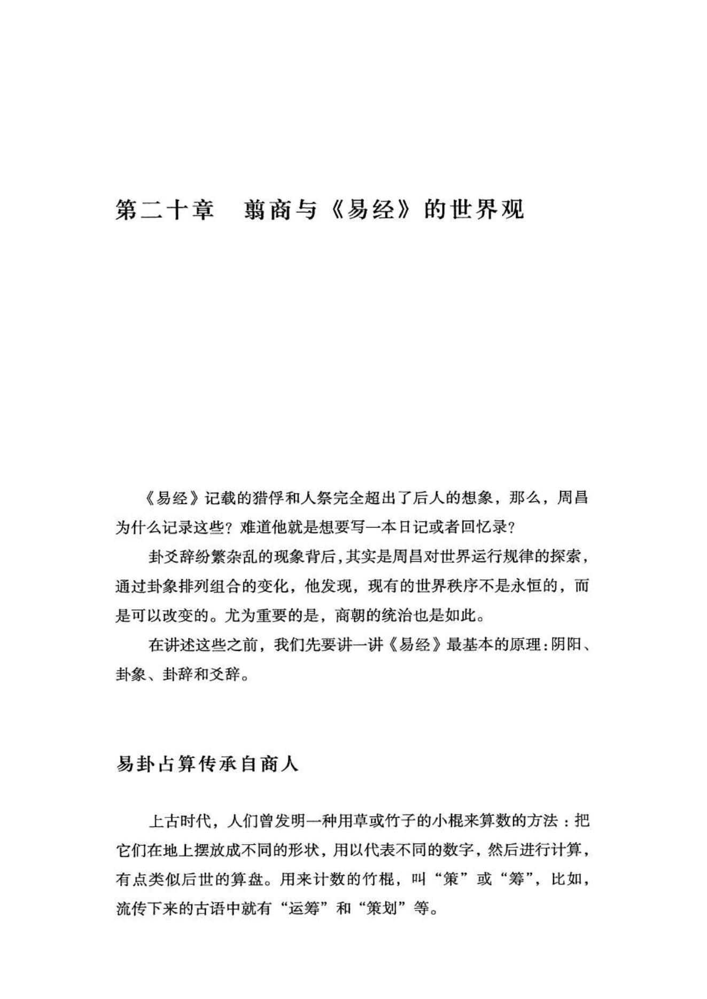
原书阅读器页 390原书物理 PDF 页 388印刷页 376
据说，半人半神的伏羲最先画出“八卦”，然后，由周昌在被商纣囚禁羑里期间把八卦推演成了六十四卦。所谓：“其囚羑里，盖益《易》之八卦为六十四卦。”但司马迁这里用的是“盖”字，表示不太确定。〔札记：从八卦到六十四卦应该在商朝完成。文王演周易是排序，整理和填写爻词。〕
先说最古老的所谓伏羲“八卦”。有四对卦，分别是乾和坤，坎和离，震和艮，巽和兑；各有代表图案，被称为“卦象”，由三根表示阴阳的“爻”组成，一根直线代表阳爻，两段半截的线代表阴爻。
乾☰ 坤☷
坎☵ 离☲
震☳ 艮☶
巽☴ 兑☱
〔札记：（一）八卦口诀：乾三连，坤六断，震仰盂，艮覆碗，离中虚，坎中满，兑上缺，巽下断。 （二）八卦与数：乾一，兑二，离三，震四，巽五，坎六，艮七，坤八。〕
东周时的学者说，这是宇宙间的八大元素：乾代表天，坤代表地；坎代表水，离代表火；震代表雷，艮代表山；巽代表风，兑代表泽（沼泽）。（《周易正义•说卦卷九》）至于伏羲或者周昌时代的人是不是这么理解的，就不好说了。
再来说六十四卦。卦象由两个八卦上下重叠组成，一共有六十四种，都有六个爻。假如是两个八卦的乾叠加，就仍叫乾卦，以此类推。但不一样的八卦互相叠加，就需要起新的卦名了，比如，震下坎上，叫屯卦，卦象是☵/☳；坎下艮上，叫蒙卦，卦象是☶/☵。
用草棍占算的阴阳八卦体系，和华北地区自龙山时代以来的甲骨占卜体系，是分庭抗礼的关系，很难说哪一种出现得更早，因为甲骨容易保存下来，但草棍占算不容易留下遗物。
到了商朝的殷都时期，有些占卜师已经习惯了在甲骨上刻字，所以他们也会把用草棍占算出来的数字刻到甲骨上。而三个数字组成的刻辞在殷墟前期武丁王的时代就有了，比周昌要早二百年。它是三个数字重叠，比如“六六六”，这三个偶数代表三个阴爻，便是八卦中的坤卦。
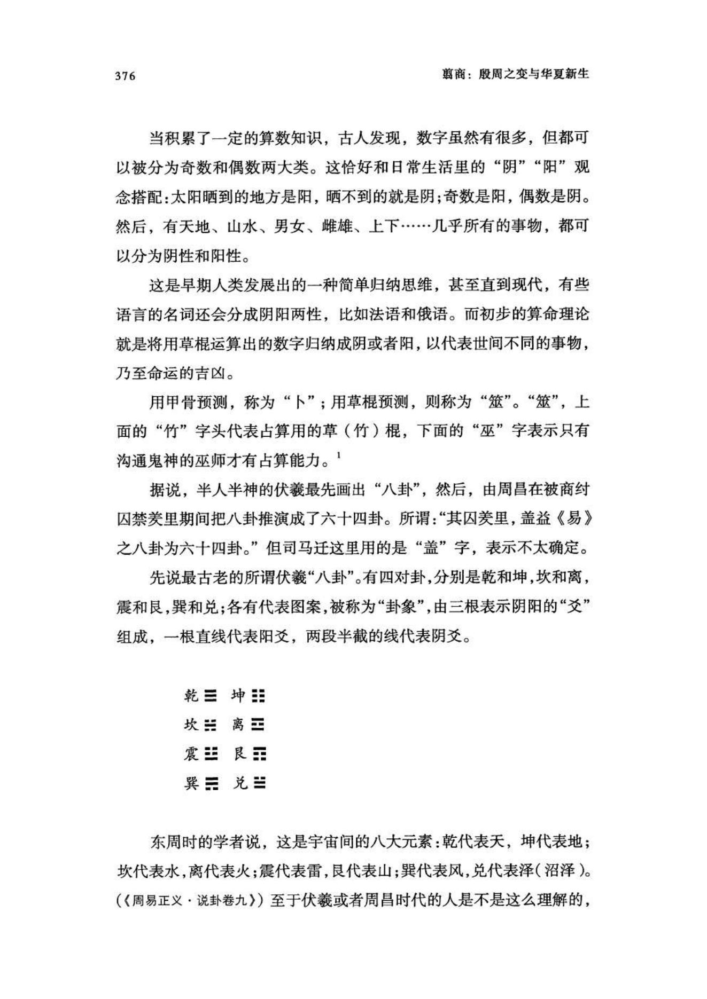
原书阅读器页 391原书物理 PDF 页 389印刷页 377
到殷商中后期，出现了六个数字的甲骨刻辞，时代也比周昌早一些。比如，“六七八九六八”对应“阴阳阴阳阴阴”，这便是《易经》中的蹇卦。从这可见，六十四卦的基本原理并不是文王发明的。
〔按语：如前所述〕
关于竹草棍如何被用于六十四卦算命，最早的记载来自春秋战国之交的《易传·系辞》：按照特定的流程，将五十根草棍用两只手拆分若干次，最后剩在手里的数量就是得到的数字，它的奇、偶就是阴、阳，这算第一个爻；如此反复演算六次，就得到六个爻，也就是一个完整的卦。这种摆列阴阳爻的顺序，必须从下往上，不能颠倒。
当然，《易传·系辞》这个记载已经比周昌的时代晚了五百多年，至于周昌到底是不是这么占算的，也无法确定。
〔按语：反复验算〕
上面所述便是六十四卦卦象的来历，那么，六十四卦的卦名，诸如乾、坤、屯、蒙等，又是什么时候产生的呢？商代的甲骨文里没有发现卦名，它们首次出现是在《易经》里。所以，也许的确是周文王命名的，至少目前还没有反面的证据。
比起古老的甲骨占卜，用草棍推演更容易，所以文王被囚禁在羑里监狱的时候，可以因陋就简进行六十四卦占算。而为了让这套占算体系更适合自己的需要，他又总结和编写了卦辞和爻辞，由此形成了《易经》的基本内容。
但这还不是文王周昌青睐六十四卦体系的根本原因。
文王写作卦辞和爻辞
六十四卦的每个卦都有一条简短的解说词，这被称为“卦辞”；相对的，卦里的每个爻也都有一条“爻辞”。概而言之，《易经》是由六十四卦的卦名、卦象、卦辞和爻辞组成的。
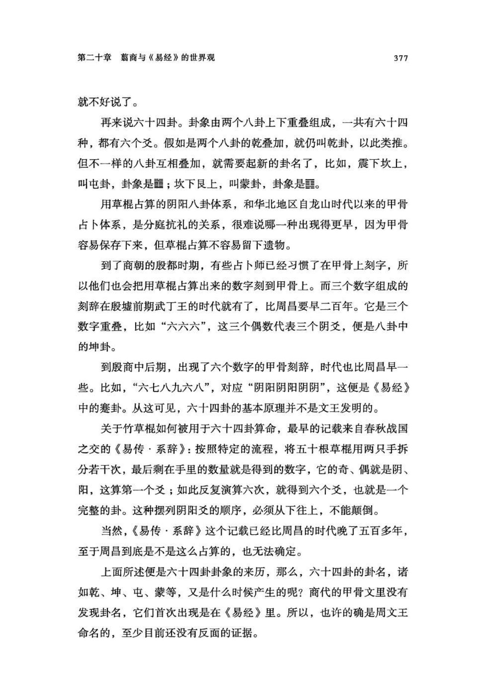
原书阅读器页 392原书物理 PDF 页 390印刷页 378
唐代给《周易》做注的孔颖达说，最早是伏羲画出了八卦，
〔按语：现存考古发现的最早八卦及阴阳爻符号，出土于浙江义乌桥头遗址的红衣彩陶，距今已有约8000至9000年的历史。〕后来有人（不知道是谁）把八卦重叠成六十四卦，可以涵盖各种“天地变化，人事吉凶”；再后来，周文王写了卦辞和爻辞，来解释每个爻和卦的吉凶含义：
盖伏牺（羲）之初，直仰观俯察，用阴阳两爻而画八卦，后因而重之为六十四卦，然后天地变化，人事吉凶，莫不周备，缊在爻卦之中矣。文王又于爻卦之下，系之以辞，明其爻卦之中吉凶之义。（《周易正义•说卦卷九》）
看来，孔颖达不同意《史记》说的“其囚羑里，盖益《易》之八卦为六十四卦”。而现代的考古发现也证明，孔颖达的确是对的。
孔颖达还说，卦辞和爻辞是周文王写的。在古代，这个说法也缺乏直接证据，一直有学者质疑。而结合甲骨文等殷商考古成果，我们会发现，孔颖达这么说的证据是比较充分的，因为卦爻辞只会是在商朝的环境中产生，不可能更晚。
〔按语：编纂〕
最早从《易经》的卦爻辞中探寻历史的学者，是顾颉刚。1929年，他考证了几条卦爻辞中蕴藏的商周时期的历史事件，并撰成《周易卦爻辞中的故事》一文发表。[[fn:2]]比如，据顾颉刚推测，归妹卦和泰卦爻辞的“帝乙归妹”，其中隐含的历史是：帝乙把自己的一个女儿嫁给了周文王，但这位王室公主没能生育，最后，或是早逝，或是离婚回了娘家，文王又续娶大姒。
就这样，顾颉刚开启了从《易经》探寻晚商历史的先河。当然，他对“帝乙归妹”的解释未必正确，毕竟当时商周力量对比悬殊，商王不大可能把妹妹嫁给周族，所以这很可能是周人为夸耀自己而做的吹嘘。但它的真实背景仍是晚商时代的商周关系。
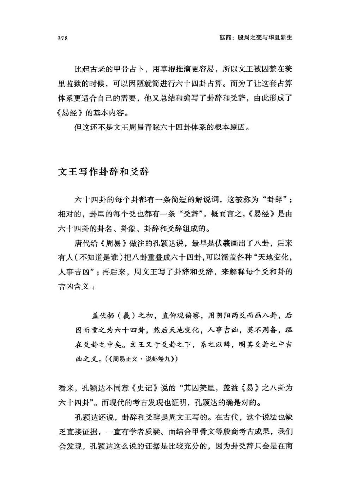
原书阅读器页 393原书物理 PDF 页 391印刷页 379
六十四卦的卦爻辞里含有很多商代特有的事件，比如，捕捉俘虏献祭；而从周朝建立开始，这些做法就消失了，后代的古人也就不再记得这些事。
这里再举个例子。《易经》的卦爻辞里经常出现“贞”字，比如坤卦的卦辞“利牝马之贞”，后世学者都不知道这个字什么意思，包括孔颖达，也只能猜测它和“坚贞”有关，解释成：“贞，正也。”其实，商代甲骨卜辞里就频繁地出现这个“贞”字，现代学者也早已确定，它就是占卜的“占”，故而甲骨占卜师也被称为“贞人”。由此，《易经》中的“贞”也就好解释了。比如，坤卦的“利牝马之贞”的意思是说，占算结果对母马有利；相对的，否卦的“不利君子贞”的意思则是说，占算结果对君子不利。看来，倘若没有发现甲骨文，我们对《易经》中“贞”字的理解很可能还会一直错下去。
《易经》的卦爻辞所记载的事件，有些肯定是只有周文王才经历过的，所以，它们的价值非常独特。[[fn:3]]从孔子时代以来，解读《易经》的著作很多，但因为没有甲骨文知识的基础，所以搞错了很多基本概念，这些“算命技术”自然也就成了无根之木。而用甲骨文和商代考古知识研究《易经》的，高亨先生可谓开先河者，他的著作《周易古经今注》就是只讨论文王的《易经》，而不涉及东周时人写的《易传》，以避免让后世的误解逆行侵入商代历史。在这个意义上，本书算是在高亨先生开创的方法基础上的一种继续。[[fn:4]]
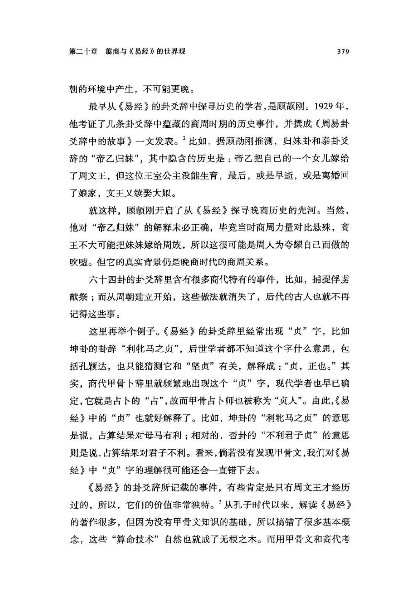
原书阅读器页 394原书物理 PDF 页 392印刷页 380
卦爻辞里有什么
《易经》卦爻辞中，除了和商代的捕俘及人祭有关的内容，还包含很多周族人的活动。这应该也是周文王比较关注的内容，否则他不会一一记载下来。
先来看第十三个卦，同人卦：
同人于野，亨。利涉大川。利君子贞。
初九：同人于门，无咎。
六二：同人于宗，吝。
九三：伏戎于莽，升其高陵，三岁不兴。
九四：乘其墉，弗克攻。吉。
九五：同人先号咷而后笑，大师克相遇。
同人于郊，无悔。
“离下乾上”，这是解释同人卦的卦象图案——☰/☲。它有六个爻，下边三条是八卦的离（☲），上边三条是八卦的乾（☰）。
按八卦的释义，离是火，乾是天，火在天的下面燃烧，就是《同人》。但《同人》与天和火有什么必然联系吗？从卦爻辞里看不出来，这里也就不再妄加揣测。
〔按语：火攻〕
“同人”的意思大概是集结（同）盟军（人）。它的卦辞是：“同人于野，亨。利涉大川。利君子贞。”意为，在原野集结起我方的盟军，举行祭祀；利于渡过大河；结果对君子有利。
从卦辞看，这很像是周文王晚年在准备灭商的工作：要集结起各部族的盟军，用祭祀取得诸神的支持，团结盟军，顺利渡过黄河（这样才能打到商朝腹地）；这个卦象对“君子”有利，前景比较好。
再来看六个爻的爻辞。
每个爻辞前面有两个字的序号，其中的“九”代表奇数、阳爻；“六”代表偶数、阴爻。
按照从下往上的顺序，最下面的第一个爻叫“初”。按阴阳，只能有“初六”或“初九”两种；最后一个爻在最上面，叫“上”，分为“上六”或“上九”。
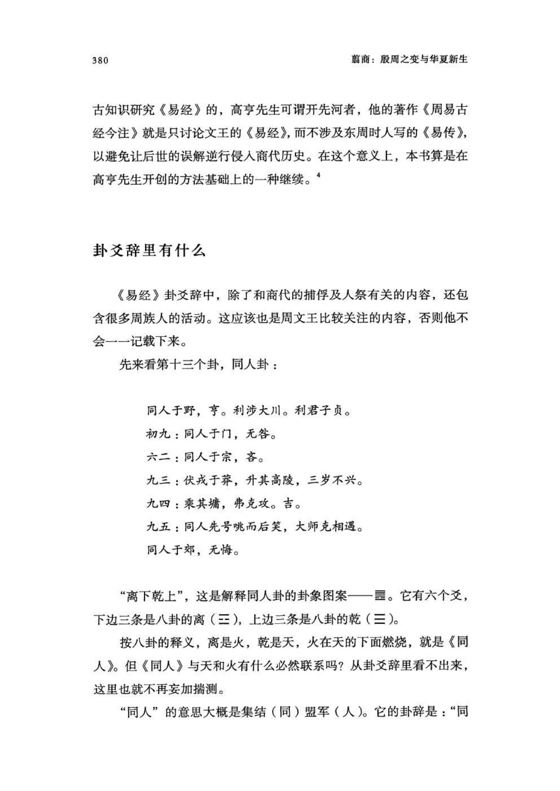
原书阅读器页 395原书物理 PDF 页 393印刷页 381
中间二、三、四、五爻的名称，则是表示阴阳的六或九放在前面，序号放在后面，所以同人卦中间的四个爻依次是六二、九三、九四、九五，顺序仍是从下往上。
第一个爻（初九）的爻辞：“同人于门，无咎。”意思是，在大门口集结盟军，没有灾祸。
第二个爻（六二）：“同人于宗，吝。”意思是，在宗庙集结盟军，前途不太光明。
第三个爻（九三）：“伏戎于莽，升其高陵，三岁不兴。”意思是，在丛林里埋伏军队，登上高高的山顶眺望敌人，三年内无法战胜敌军。[[fn:5]]
第四个爻（九四）：“乘其墉，弗克攻。吉。”意思是，登上了敌人的城墙，没能攻打下来，但结果吉利。
第五个爻（九五）：“同人先号咷而后笑，大师克相遇。”意思是，盟军先是号啕大哭，又变成大笑，会遭遇敌人的大部队。
第六个爻（上九）：“同人于郊，无悔。”意思是，在郊野里集结盟军，没有什么后悔的。
看来，同人卦皆与战争有关，但各爻的结果不太一样，有很顺利的，也有很艰难和危险的。
不过，《易经》的卦并非都是军国大事，有些卦看上去只是些偶然的、彼此无关的日常小事，各爻之间也看不出，至少我们看不出有什么明显的关联。这又是为什么？探寻这背后的原因，要从文王研究“易”的目的开始。
六十四卦为何成对？
商王进行甲骨占卜时，会把需要预测的问题刻在甲骨上。这里，我们用前述武丁关于妇好生育的一次占卜为例说明：一，武丁先刻下了“妇好这次生育是否顺利”的问题，这是“命辞”。二，然后，从甲骨裂纹走向判断结果，这是“占辞”：“丁日或庚日生育的话会吉利”。三，最后的结果也可能会补刻到甲骨上，这是“验辞”。比如，武丁这次占卜的三十一天后，妇好生育了一个女儿，“验辞”便是：“甲寅娩，不嘉。惟女。”
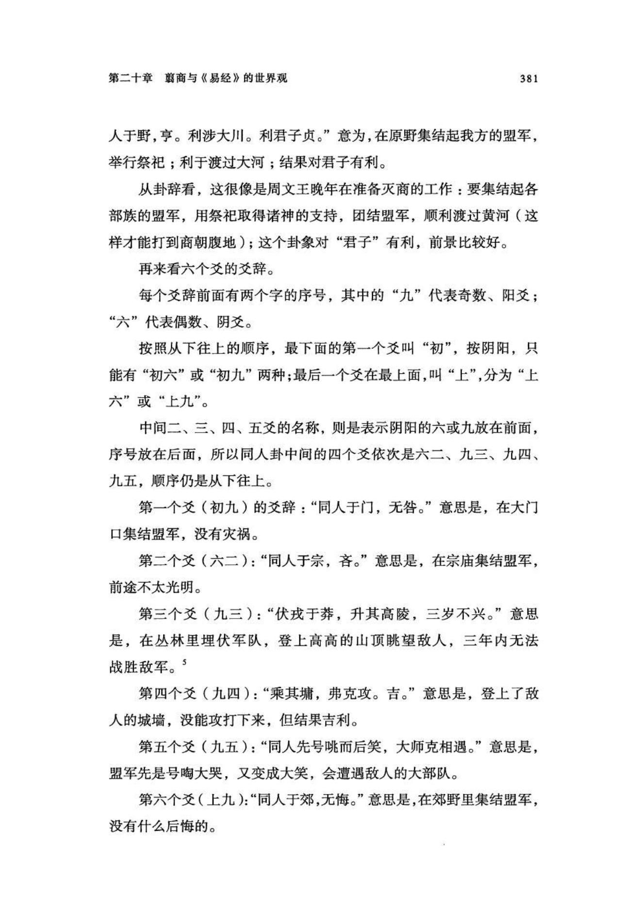
原书阅读器页 396原书物理 PDF 页 394印刷页 382
甲骨文的这些刻辞不太复杂，背后的原理也很简单，基本不涉及事物的因果关系：先是给诸神献祭并询问问题；然后，诸神的回答就会传递到甲骨的烫纹上；最后，占卜者将其解读出来。也就是说，这是一种单一的因果叙事：诸神的决定是因，表现到人间就是果，甲骨占卜是读取这种因果关系的工具。至于人类有时候占卜错了，那也是误读了神的旨意，错在人而不在神。
但六十四卦则与此不同，它的原理更复杂。它认为，世间的一切并不都是由神直接决定的，而是各种事物会发生互相影响并形成一种因果发展的链条，其对应的就是卦里六个爻的阴阳顺序。换句话说，对于每一个主题的卦，周文王都需要找出与之相关的六个事件或现象作为六条爻辞，从而构成一个完整的因果发展链。而且，事物的因果关系不会只有一种模式。在某种环境下，甲是乙的原因，而在另一种环境下，则可能变成乙是甲的原因，甚至原本没有因果关系的两个孤立事件，在另一种时空环境下也可能会发生联系。
所以，文王在《易经》中梳理了他亲历和认知的各种事件，并试图用不同的因果发展链来串联和解释它们。比如，有些相同的爻辞（事件），比如“帝乙归妹”，就出现在了不同卦的不同爻位，这其实是文王在设定不同的占算情境。因此，同一事件会具有不同的前因后果，以及不同的含义和指向性。
换言之，文王的爻辞虽都是发生过的或者预测要发生的具体事件，但在他看来，这些事件未必是单线性的，它们完全可能按照不同的时间顺序再次发生，从而使因果关系发生颠倒。
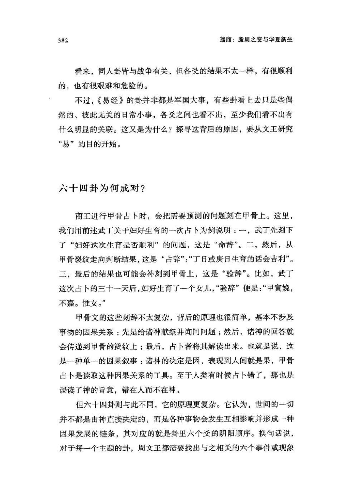
原书阅读器页 397原书物理 PDF 页 395印刷页 383
一切事物都是无常和可变的，六爻的不同组合对应着不同的卦象，哪怕只变换一个爻，也会变成另一种卦象，这就是“易”：变易无常。由此，六十四卦就是文王对可能性做出的六十四种探索和六十四个模型。或者说，文王是在用各种无常的可能性重新组织世界，重组头脑中的各种认知。
这样一种思路，可以从六十四卦的“组对”规律中发现一些痕迹。六十四卦皆有卦名，且是成对组合，比如，“乾”和“坤”，“震”和“艮”，”同人”和“大有”，“噬嗑”和“贲”……是谁给这些卦起的名字并编组成对，史书中没有记载，但文王的可能性很大——考古发现的更早的数字卦象并没有附带卦名，更没有成对出现的记载。
其中，有些成对的卦名比较好懂，比如，“乾”和“坤”，“否”和“泰”，“损”和“益”，“既济”（已经渡河）和“未济”（尚未渡河），都是反义词；有些却未必是反义词，比如，“井”和“困”，“小畜”和“履”，看不出彼此之间有什么对立关系；还有一些则更模糊，比如，“噬嗑”和“贲”，更难判断它们之间的关系。
我们先搁置对卦名的解释，来看卦象，看看它们的组对规律是什么，以及是否一定会具有相反的关系。
有人说，乾卦和坤卦最是简单明白，乾卦都是阳爻，坤卦都是阴爻，看来，卦象组对的规律是每个位置的爻都阴阳相反，乾的第一个爻是阳，所以坤的第一个爻是阴，以此类推……
乾☰/☰ 坤☷/☷
其实不然。乾和坤这一对卦的卦象比较特殊，不代表普遍规律。六十四卦分为三十二对，其中只有四对是这种情况：同位之爻，阴阳相反。〔札记：“同位之爻，阴阳相反”在《易经》里指的是错卦（又称旁通卦）关系 [5.5, 5.9]，即两个卦的对应爻位阴阳完全相反（阳变阴，阴变阳）。这种关系揭示了事物对立统一、相反相成的整体转化规律 [5.8]。错卦的基本特点爻位对应：两卦的初、二、三、四、五、上六个同位爻阴阳全盘相反 [5.9]。整体对待：如乾卦与坤卦、坎卦与离卦，彼此互为错卦，呈现完全相反的对立面与视角 [5.6]。物极必反：暗含事物发展到极端时，会向其对立面转化的哲学道理。〕
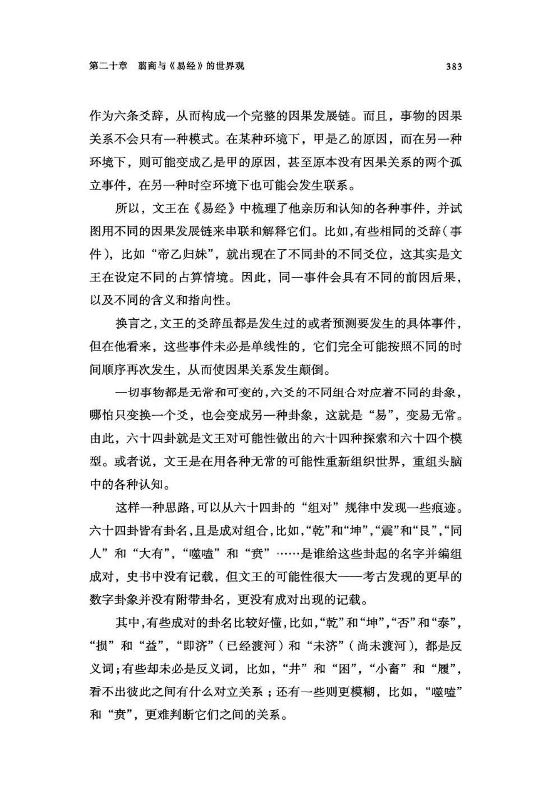
原书阅读器页 398原书物理 PDF 页 396印刷页 384
还有一种可能性。六十四卦的卦象是两个八卦上下重叠而成，那是不是这两个八卦互换位置就构成一对相反的卦呢？
也不是。比如，屯卦☵/☳，卦象是震☳在下，坎☵在上；和它成对的是蒙卦☶/☵，但卦象并非坎☵在下，震☳在上，而是坎☵在下，艮☶在上。
从这也可见，六十四卦的意义未必跟组成它的两个八卦有关系。
至于六十四卦的成对原则到底是什么，我们这里随便选个例子。比如，无妄和大畜这一对卦：
无妄☰/☳ 大畜☶/☰
可以看到，这两个卦象，并不是同一个位置的爻必须阴阳相反，也不是上下两个八卦位置互换，而是六个爻呈现“颠倒”关系：无妄卦的第一个爻（最下面的），和大畜卦的最后一个爻（最上面的）相同；无妄卦的第二个爻，和大畜卦的倒数第二个爻相同……
六十四卦里面，有二十八对都是这种“颠倒成对”原则。但也有极少数例外。就像上面说过的乾卦，它的六个阳爻形成上下对称，如果把它们上下颠倒一遍，还是完全同样的卦象。这就没办法了，只好让它和六个阴爻的坤卦结成一对，不然，六个阴爻的坤卦，上下颠倒之后也还是自己，所以它俩正好结对。
这种因为自身对称而只能“相反成对”的卦，除了乾和坤，还有三对：
坎 离 颐 大过 中孚 小过〔札记：| 卦名 | Glyph | 卦序 | 上卦／下卦 | 通称 |
| -- | :---: | -: | ----- | ---- |
| 坎 | **䷜** | 29 | 坎上坎下 | 坎为水 |
| 离 | **䷝** | 30 | 离上离下 | 离为火 |
| 颐 | **䷚** | 27 | 艮上震下 | 山雷颐 |
| 大过 | **䷛** | 28 | 兑上巽下 | 泽风大过 |
| 中孚 | **䷼** | 61 | 巽上兑下 | 风泽中孚 |
| 小过 | **䷽** | 62 | 震上艮下 | 雷山小过 |
按《周易》卦序排列为：
```text
䷚ 颐 → ䷛ 大过 → ䷜ 坎 → ䷝ 离
䷼ 中孚 → ䷽ 小过
```
这六卦的共同特点是：**上下颠倒后，仍然是本卦**，所以称为“错综后不变”的六个特殊卦。下一步可进一步比较它们的六爻结构。〕
总结一下，在《易经》中，每卦六个爻都是自下而上的顺序，而六十四卦组对的原则总体上是六爻“颠倒成对”；只有八个上下对称和无法颠倒的卦，才按“相反成对”的原则组成四对。
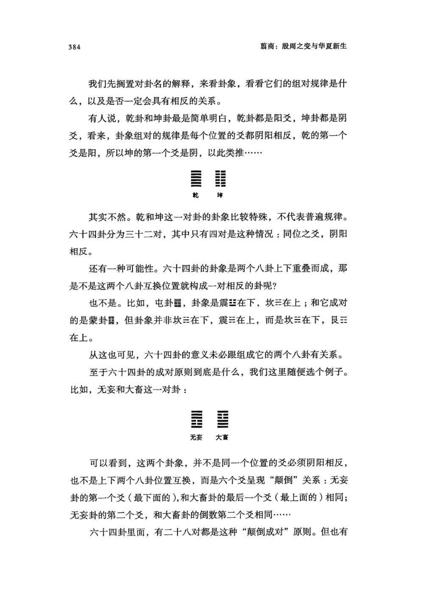
原书阅读器页 399原书物理 PDF 页 397印刷页 385
研究《易经》的美国学者夏含夷（Edward Shaughnessy
〔札记：https://en.wikipedia.org/wiki/Edward_L._Shaughnessy〕）很重视“颠倒成对”原则。他推测说，《易经》中每一对卦的内容都基本相似，比如，对于泰卦中的“帝乙归妹”，夏含夷认为，泰卦以及与泰卦成对的否卦，都和这桩婚姻有关。但这种推论还缺少证据，至于每一对卦探讨的内容都是什么，多数还难以解释。[[fn:6]]
其实，不必急于追索每一卦的具体含义，而是应当先明白卦象“颠倒成对"原则的本质是什么。综合前述，本书认为，它是文王发现的世间规律，或者说，一种被称为“易”的思维方式：世间的一切都不是永恒和持续不变的，它们都可以有另一种相反的存在形式，一切也都可以颠倒重来一遍。
否，颠倒重来就是泰；损，颠倒重来就是益……一切事件的发展过程，都可以“倒放”一遍，从终点回到起点。这意味着，一切皆有可能。
翦商，可占
按文王《易经》的“颠倒成对”原则，世间一切既有的事实都能用相反的方式再现一遍。商族曾经很弱小，就像爻辞里的“丧牛于易”，但他们后来却建立了强大的商朝；然而，这个过程同样是可逆的，目前强大的商朝也终将灭亡。
这种思维方式可谓石破天惊。当时的人还没有走出神权时代，普遍认为世间一切都被天界的鬼神主宰：商王家族世代向上帝和诸神献祭，从而得到天界的福佑，因此和商朝作对，就意味着违反鬼神世界的意志，不可能成功。
然而在羑里的地牢里，周昌的身体虽无法逃离，但他推演的六十四卦组对原则却自行打开了一扇通往新世界的大门，这便是：“翦商”是有可能的。
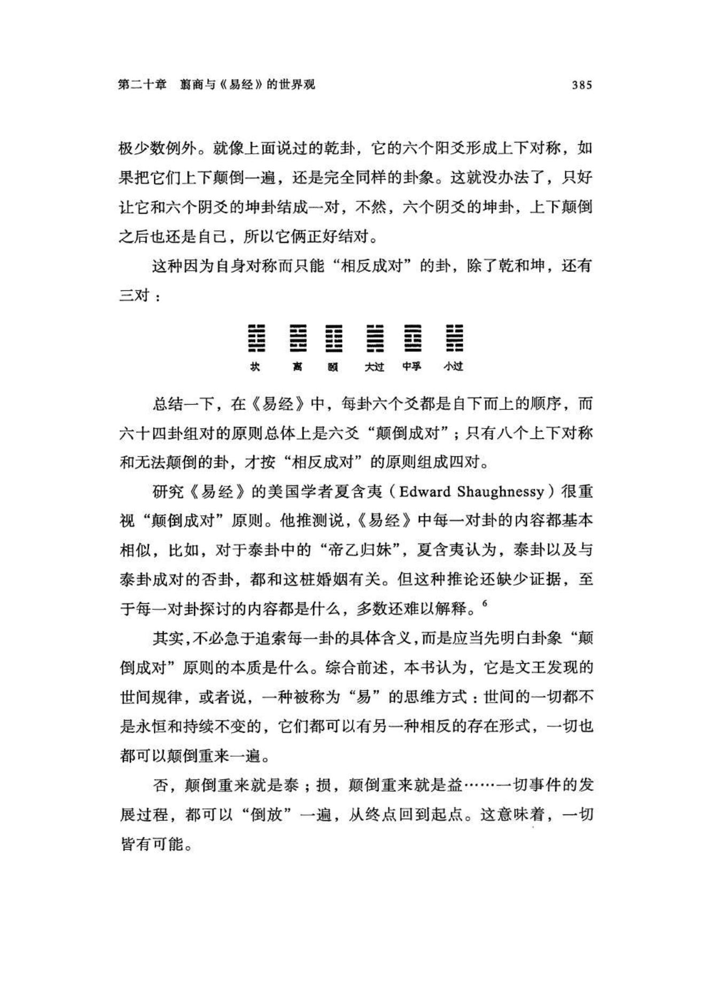
原书阅读器页 400原书物理 PDF 页 398印刷页 386
虽然当初，是上帝指示和支持商人灭夏建商的，但上帝的心意也是可以更改的，它不可能永远充当商人的守护神，周族也可以获得上帝的垂青，并在它的保佑之下灭掉商朝，取而代之。
在当时，这个想法实在是大逆不道，文王更不敢明白地将其写出来，哪怕当他获释回到周邦之后，也要秘而不宣，故而《易经》中的多数内容只能用含糊其辞的隐语来表达。
来看坤卦六三爻：
含章可贞。或从王事，无成，有终。
六三爻的第一句是“含章可贞”，这“含章”二字，历来没有合理的解释。高亨认为，“含”为“戡”之借字，“章”为“商”之借字，“含章”就是“戡商”，也就是“翦商”。[[fn:7]]所以坤卦六三爻的意思是，翦商之事是可以占算的；如果继续忠于商王，不会有成果，会有终结。
这个推测颇为合理。而且，用“含章”表示“翦商”，未必全是古文字的通假借用，可能也是为了保密。
有类似含义的，是讼卦的六三爻：
食旧德，贞厉，终吉。或从王事，无成。
高亨认为，“食旧德”就是背叛商王昔日的恩德，[[fn:8]]也就是开启翦商之谋。占卜的结果是有灾害（“贞厉”），但最终会吉利（“终吉”）；反之，也就是如果继续忠于商王（“或从王事”），则不会有成果（“无成”）。这和坤卦六三爻相同。
《易经》中还有一处“含章”，出自垢卦九五爻：
以杞包瓜，含章，有陨自天。
〔按语：杞人忧天〕
“以杞包瓜”的意义难解，但其重点是“瓜”；“含章”，传统解释是瓜上有花纹；“有陨自天”，是说这只瓜从天上落下来摔碎了。按照高亨的解释，垢卦九五爻是个隐喻，意思是说商朝就像是一只有花纹的瓜，不堪一击，落地即碎。[[fn:9]]
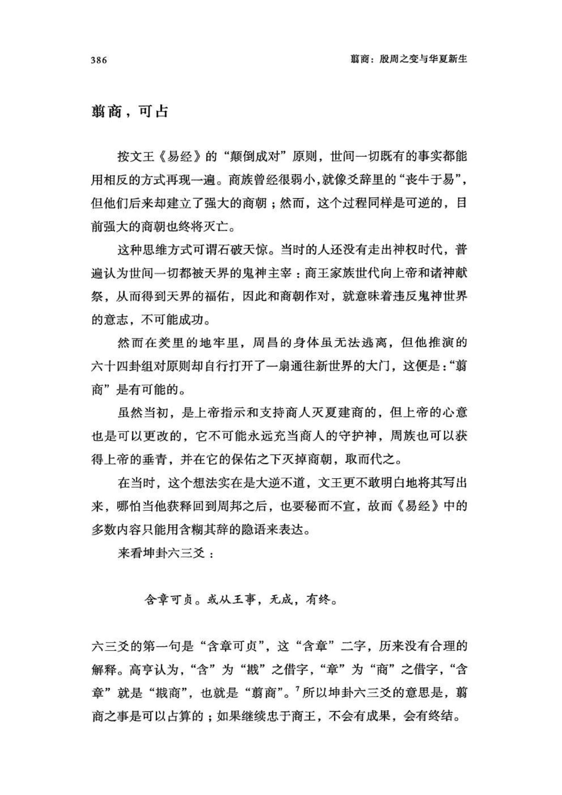
原书阅读器页 401原书物理 PDF 页 399印刷页 387
在六十四卦中，肯定有某个卦象代表的是商朝的崛起；而与它对立的卦，则代表了商朝的灭亡。因此，只要把这些卦找出来，研究各爻的原理，也即每个爻可能代表什么具体事件或条件（文王会因此代入不同的事物进行推演），就有可能找到灭亡商朝的密码。
到这里，我们就可以初步理解为什么说《易经》的卦爻辞内含各种各样的事件，甚至难以理解的只言片语了：这是文王在对自己认知的各种事件进行排列和重组，用不同的卦象（阴阳爻组合）来检验它们的吉凶，以便总结出这个世界更深层的运行规律。而限于当时的环境，他必须刻意地使与翦商有关的各种信息变得很隐晦，外人会很难理解，所以我们也就不用对所有卦爻辞都强求解释了。
《易经》并非文王专门编写的算命教材，而更像是他自己的练习簿，所以内容驳杂，有大量的私人琐事。从萌生翦商之念始，文王就反复将其代入和推算，并随时验证、修订和增补，希望总结出一套最精确的占算方法，而最终目的，当然就是在消灭商朝的战争里运用这套预测技术。
有了对《易经》的上述理解，我们接着来看最前面的乾、坤两卦。
古人对乾与坤是这么解释的：乾为天，阳之代表；坤为地，阴之代表。其实，这一对卦可能还代表了文王最关心的两个事物：商和周。商是强大的主宰，周是弱小的藩属，但在各自的生命历程中，它们会各自走向自己的反面。
元亨，利贞。
初九：潜龙，勿用。
九二：见龙在田，利见大人。
九三：君子终日乾乾，夕惕若厉，无咎。
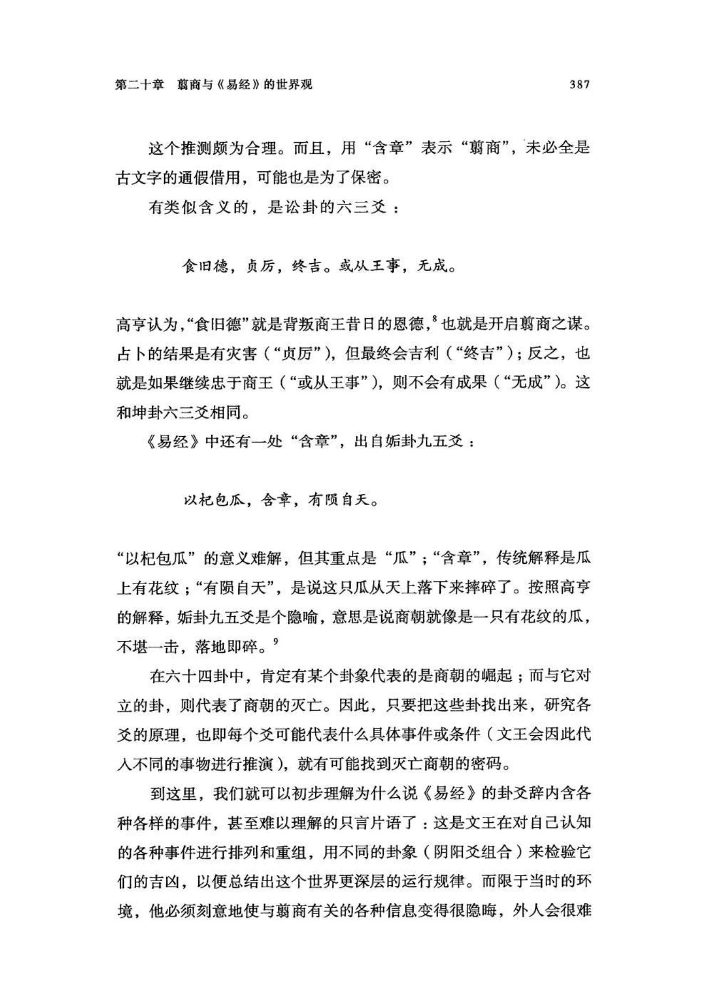
原书阅读器页 402原书物理 PDF 页 400印刷页 388
九四：或跃在渊，无咎。
九五：飞龙在天，利见大人。
上九：亢龙有悔。
用九：见群龙无首，吉。〔札记：视频揭示了一个颠覆性发现：乾卦中的"龙"并非神话生物，而是6000年前古人观测的苍龙七宿天象系统。通过查海遗址（8000年前石龙）、濮阳西水坡墓葬（6500年前蚌塑龙虎配北斗）和曾侯乙漆箱（战国二十八宿图）三大考古证据链证实，"二月二龙抬头"实为角宿初现的地平线天文现象。 这套观象授时系统将乾卦六爻精准对应苍龙运行轨迹：从冬至"潜龙勿用"（整条龙隐没），到夏至"飞龙在天"（龙星横贯中天），再到秋初"亢龙有悔"（龙星西沉）。大火星（心宿二）作为关键坐标，指导着"七月流火知暑退"的农耕节奏。 这不仅是天文考古的重大发现，更揭示中华龙图腾的科学根基——我们的先民早在文字诞生前，就用星空编织了跨越四千年的生存时钟。所谓"神话"，实则是先民用肉眼丈量天地的智慧结晶。〕
乾卦里集中出现的意象是龙。从夏朝-二里头文化以来，龙都是王者的象征。初九爻的“潜龙勿用”是说，龙弱小，潜伏于水下，无所作为。这说的是商族崛起之前的状态，后面的龙则已经活跃在天地之间：“见龙在田”“飞龙在天”。九二爻和九五爻都有“利见大人”，可能是隐喻周昌或者周族两次见到商王并受到重视。九三爻曰：“君子终日乾乾，夕惕若厉，无咎。”这可能说的是周族人兢兢业业地侍奉商朝的状态，也可能是说商朝先王奋发有为时的状态。到上九爻的“亢龙有悔”，则已经可能是在说商朝虽已强大到极致，但其根基不稳固，埋藏着衰亡的隐患。
和《易经》的其他卦不同，乾、坤两卦在六条爻辞后，还分别有一条“用九”和“用六”，这可能是因为文王对这两卦格外重视，所以各增加了一句总结。《乾》卦的“用九”是“见群龙无首，吉”，这可能是说文王在殷都生活期间结识各种商朝上层人物，发现他们之间矛盾很深，周族可以找到内应，最终倾覆商朝。在这里，“吉”当是文王对翦商事业的判断，而非商朝的国运。
再来看坤卦：
元亨。利牝马之贞。君子有攸往，先迷，后得主，利。西南得朋，东北丧朋。安，贞吉。
初六：履霜，坚冰至。
六二：直，方，大；不习，无不利。
六三：含章，可贞。或从王事，无成有终。
六四：括囊，无咎无誉。
六五：黄裳，元吉。
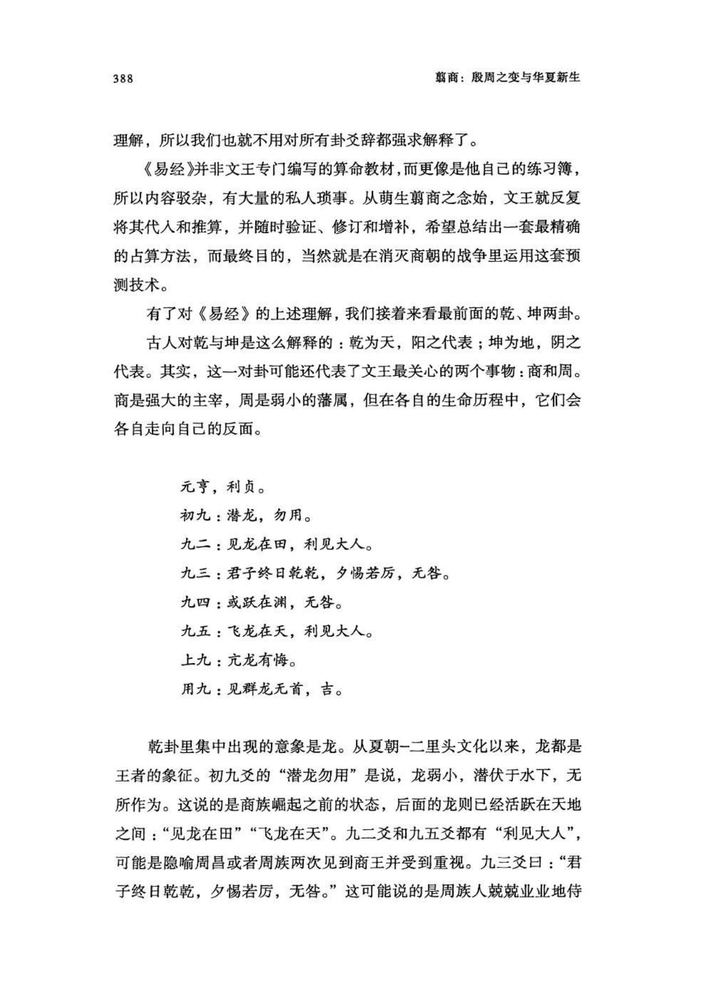
原书阅读器页 403原书物理 PDF 页 401印刷页 389
上六：龙战于野，其血玄黄。
用六：利永贞。〔札记：坤卦"牝马"之谜的结构化解读： 1. **核心矛盾**：传统将"利牝马之贞"解为"母马柔顺"，但马实为刚烈动物，与"柔顺"象征相悖。 2. **天象溯源**： - 房宿四星排开如马车（车厢+缰绳+车锁），《史记》称"房为府曰天驷" - 房宿与太阳运行同步，春分拉日出、夏至送日高、秋分伴日落、冬至驱日返 3. **双重实证**： - 6500年前西水坡大墓：龙尾处蚌壳摆塑小马，印证"龙尾摆马"天象认知 - 坤卦六二"直方大"：冯时教授考证"方"实指房宿，描述冬至房宿中天的天象 4. **本质重构**： - 乾卦（阳）：天上运行，顺读（初九至上九），管春夏 - 坤卦（阴）：地下承载，逆读（上六至初六），管秋冬 - "牝马"非柔顺象征，而是驱动太阳完成地下返程的阴性力量 5. **体系突破**：破解两千年来误读，揭示阴阳互根的宇宙运行法则——乾创坤成，缺一不可。〕
坤卦的卦辞中出现了“牝马”（母马），但不知其具体代表何事；“君子有攸往，先迷，后得主，利”，应该是说君子（周昌）去往殷都，开始时遭遇各种不幸，但也结识了可以利用之人；而“西南得朋，东北丧朋”，则是说在西南方得到盟友，东北方则丧失盟友。殷都在周原的东北方，这可能是预示商周之间终将反目。卦辞的最终判断是“安，贞吉”。
六三爻的“含章”（翦商），前文已述，这里不再赘述；六四爻的“括囊”，字面意思是把口袋（囊）扎起来，这可能是比喻翦商之谋需要严格保密；上六爻的“龙战于野，其血玄黄”则可能是预言周与商最后的决战，隐喻商朝（龙）将喋血原野；最后的用六爻“利永贞”是结论，说明翦商事业大有前途。
当然，乾、坤两卦的卦爻辞中也有很多难以解释之处。比如，”或跃在渊”与“黄裳，元吉”，很可能是文王有意为之的隐语。类似现象在《易经》里有很多，已经无法亦不必强行求解。
不过，文王并没有活到商朝灭亡，所以他的推算和验证持续到了临死之前。至于文王是先萌生翦商冲动，再从易卦体系寻求支持，还是在研究易卦组对原则时受到启发而产生的翦商之念，这已经很难判断。但至少有一点是肯定的：羑里的牢狱生活已经让文王深切地体会到当一名人牲（孚）的滋味；而在以往，当被要求带领族人捕猎羌人缴纳给崇侯时，他不太可能有如此深刻的切肤之痛。
从猎俘者变成俘，本身就是“易”，而变易的旅程一旦开启，就会产生难以预测的后果。年过半百的文王深谙世界的不确定性，把人生剩余的时光大都投入了对《易经》的推算，但同时，他也没有忽视商人最正统的甲骨占卜技术。这两套体系和世界观，文王都不敢偏废。
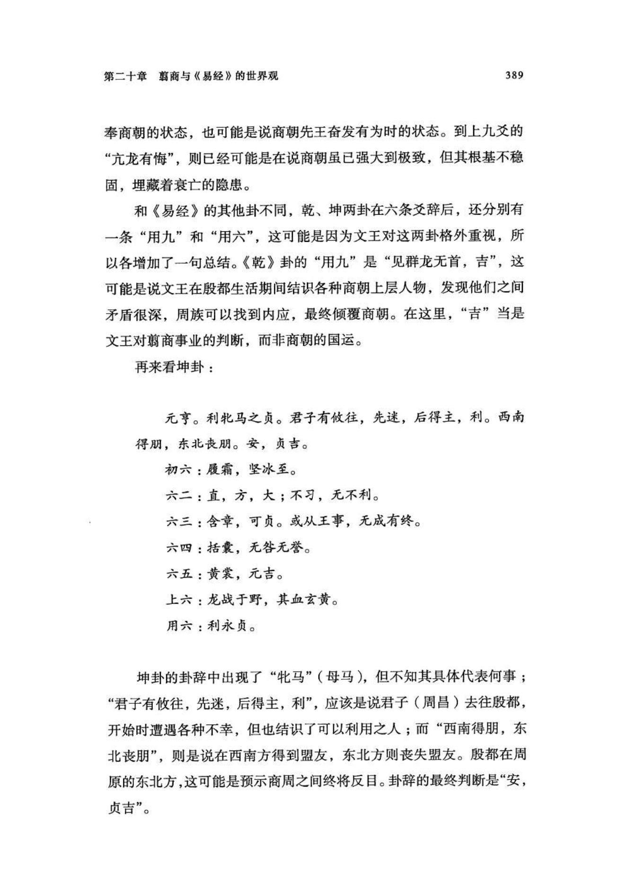
原书阅读器页 404原书物理 PDF 页 402印刷页 390
注释
1参见宋镇豪《夏商社会生活史》，中国社会科学出版社，2005年，第530页。
2顾颉刚：《周易卦爻辞中的故事》，《燕京学报》1929年第6期。收入《顾颉刚古史论文集》卷11，中华书局，2010年。
3有学者认为个别的卦辞出现更晚，属于周公时代产物，如晋卦辞：“康侯用锡马蕃庶，昼日三接。”意思是说，康侯（周公的弟弟卫康叔周封）被天子赐予了很多马匹，一天之内得到三次接见。但不能排除文王时期有名为“康侯”的殷商贵族。再如爻辞中曾出现“箕子”，有学者认为是周灭商之后的记录，其实文王已经有可能和箕子打过交道并记录下来。
4“周易”这个词的含义发生过扩大。春秋时期的史书，如《左传》，说的“周易”只是文王卦爻辞。孔子弟子编辑《周易》时，把他们对卦爻辞体系的很多解释也汇编了进去，比如《系辞》《文言》等。这些解释被称为《易传》或《十翼》（十种对卦爻辞的解释），导致《周易》的内容扩大。为了特指文王卦爻辞，现代学者称其为《易经》，以表示和《易传》的区别。本书也用《易经》代表文王卦爻辞体系，不涉及后来的《易传》。
5孔颖达《正义》：“唯升高陵以望前敌，量斯势也，纵令更经三岁，亦不能兴起也。”
6 ［美］夏含夷：《结婚、离婚与革命——〈周易〉的言外之意》，李衡眉、郭明勤译，《周易研究》1994年第2期。
7高亨释为：“乃武王克商之兆，所占之事，自为可行，故曰含章可贞。”参见高亨《周易古经今注》，第167页。高亨认为这是周武王灭商时的占卜辞，其实它很可能是在周文王时期就已经有了，是对未来之事的占算。
8高亨认为，食为蚀之借字：“食旧德，谓亏损其旧日之德行也。”参见高亨《周易古经今注》，第178页。
9高亨释为：“戡商有陨自天，言武王之克商，乃是天陨灭商祚也。”参见高亨《周易古经今注》，第287页。
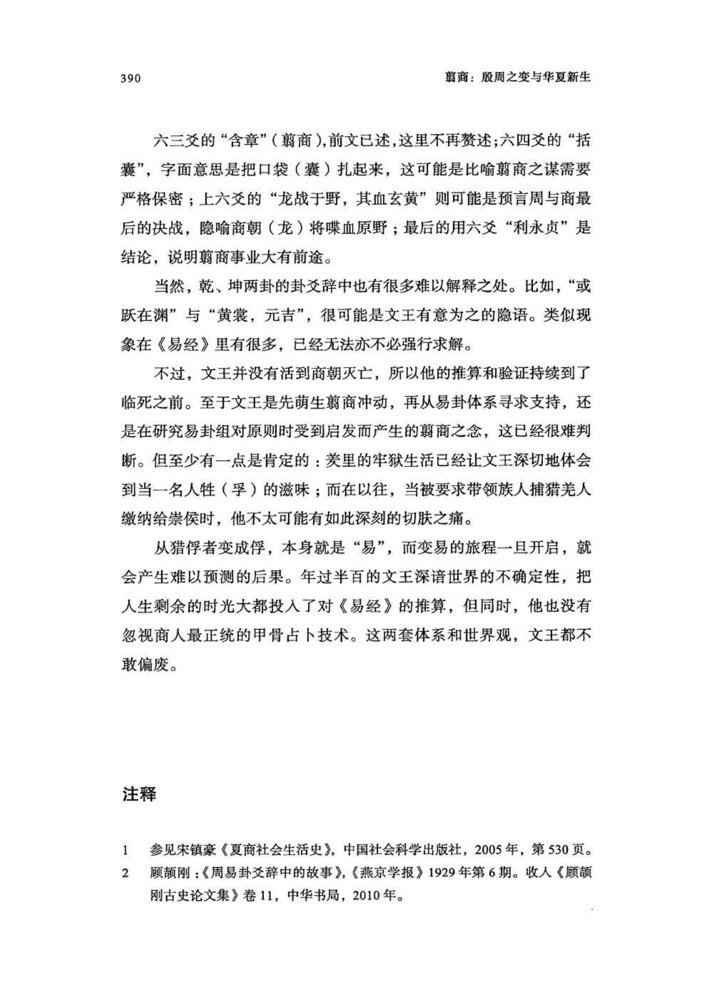
原书阅读器页 405原书物理 PDF 页 403印刷页 391
[[editor-fn:1]]
〔编者注1〕这个版以注音为主，不对内容进行讨论。
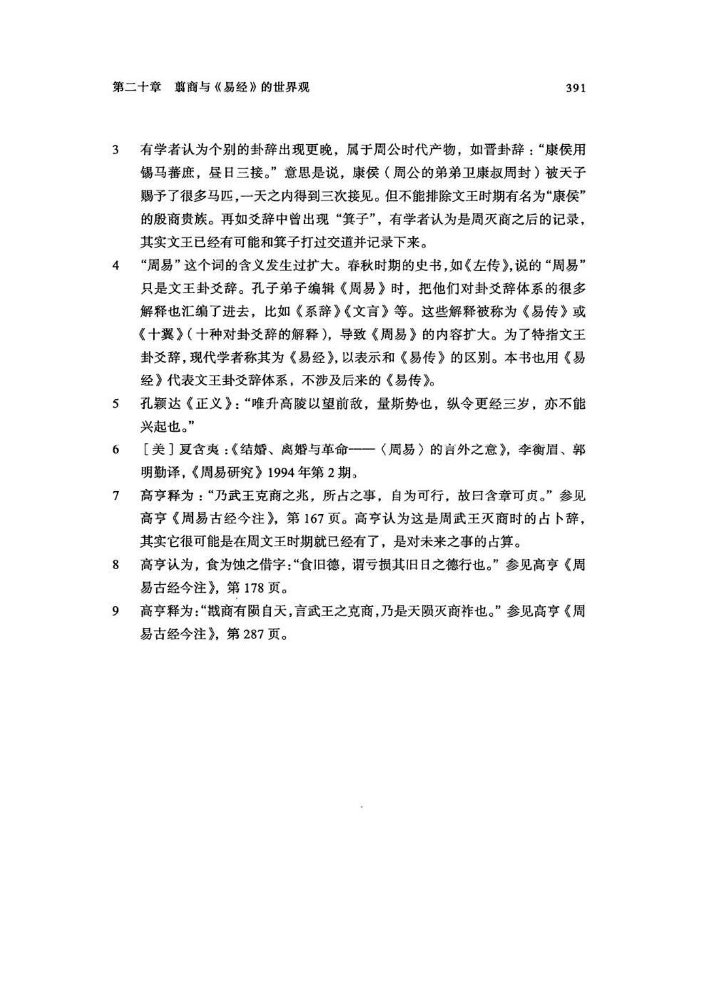
原书阅读器页 406原书物理 PDF 页 404印刷页 392
编辑札记
标记
先在正文中选择文字，再输入拼音；可用“拼音；简注”。